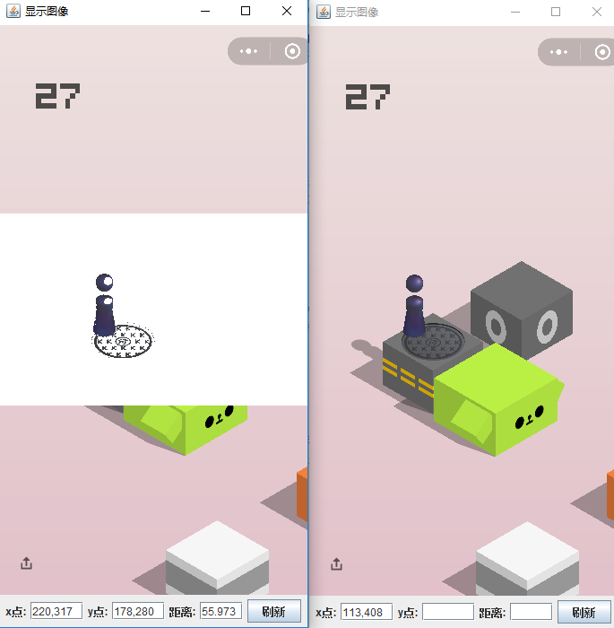
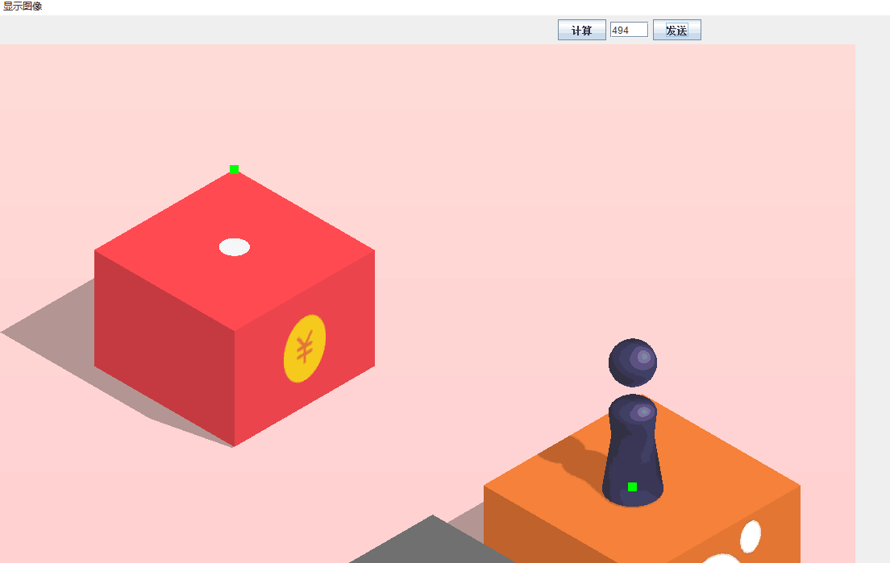

最近微信跳一跳小游戏在朋友圈着实火了一把，为了争第一，朋友圈的最高分一次一次刷新，随后好多人晒出了自己刷分攻略，有制作物理外挂的，有程序外挂的。作为程序员，特别动手能力比较强的程序员，这时候就闲不住了。
GitHub上已经有Python版外挂(https://github.com/wangshub/wechat_jump_game)，这里我用Java实现。

原理
跳一跳辅助的原理特别简单，主要由以下几个步骤完成：
- 量出小人底盘中心点的位置与下一跳中心点的距离（可以通过鼠标点击的方式测量或者图像分析的方式获得），因为每次跳跃的角度有一定规律，所以获取两点的横向距离也可以。
- 手动多跳几次，记录时间和距离，二者之间存在线性关系，即
t=f(d)，在坐标图中划出以上几点，求出关系函数。 - 根据距离和关系函数算出按压时间，通过
adb发送按压命令。
知识准备
adb协议
Android Debug Bridge是对所有连接到开发机器上的android真机和模拟器进行跟踪管理，实现了大量控制命令，方便PC端通过命令行或者助手类程序来控制Android设备。简而言之，是PC端和Android设备通信的中间桥。adb协议有很多实现方式，这里用的是vidstige的java实现:(https://github.com/vidstige/jadb)
图像分析基础
java实现
模拟按压的实现
这里将模拟按压实现为一个Server，等待client的输入，可以是图像分析获取点距的自动输入，也可以是鼠标测量的手动输入。
package jiges.github;
import se.vidstige.jadb.JadbConnection;
import se.vidstige.jadb.JadbDevice;
import se.vidstige.jadb.JadbException;
import java.io.*;
import java.net.ServerSocket;
import java.net.Socket;
import java.text.DecimalFormat;
import java.util.List;
import java.util.concurrent.TimeUnit;
/**
* 模拟按压服务
* Created by ccr at 2018/1/3.
*/
public class PressServer {
public static void main(String args[]) {
JadbConnection jadb = null;
DataInputStream reader = null;
DataOutputStream writer = null;
try {
jadb = new JadbConnection();
List<JadbDevice> devices = jadb.getDevices();
JadbDevice device = devices.get(0);
ServerSocket serverSocket = new ServerSocket(8899);
while (true) {
System.out.print("等待输入:");
Socket client = serverSocket.accept();
reader = new DataInputStream(client.getInputStream());
writer = new DataOutputStream(client.getOutputStream());
String input = reader.readUTF();
System.out.println(input);
int d = Integer.valueOf(input);
//计算按压时间
double time = d * 1.565;
DecimalFormat df = new DecimalFormat("0");
//发送按压指令
device.executeShell("input","touchscreen","swipe","200","200","200","200",String.valueOf(df.format(time)));
//睡眠一定时间后才返回，需要2s的时间完成跳跃动作
TimeUnit.MILLISECONDS.sleep((long) time + 2000);
writer.writeUTF("OK");
}
} catch (IOException | JadbException | InterruptedException e) {
e.printStackTrace();
}
}
}
手动和自动的按压方式
package jiges.github;
import jiges.github.picture.Picture;
import se.vidstige.jadb.JadbConnection;
import se.vidstige.jadb.JadbDevice;
import se.vidstige.jadb.JadbException;
import java.io.*;
import java.net.Socket;
import java.util.List;
/**
* Created by ccr at 2018/1/8.
*/
public class PressClient {
/**
* 图片分析
*/
public static void main(String[] args) {
JadbConnection jadb = null;
try {
jadb = new JadbConnection();
List<JadbDevice> devices = jadb.getDevices();
if(null == devices || devices.isEmpty()) {
System.out.println("未找到设备.");
System.exit(0);
}
JadbDevice device = devices.get(0);
Picture picture = new Picture(device);
while(true) {
picture.loadPicture();
sendCommand(picture.analyze());
}
} catch (IOException | JadbException e) {
e.printStackTrace();
}
}
/**
* 手动输入距离
*/
/*public static void main(String[] args) {
BufferedReader br = null;
try {
while(true) {
//等待键盘输入
br = new BufferedReader(new InputStreamReader(System.in));
System.out.print("请输入距离:");
String input = br.readLine();
if(null != input && input.equals("quit")) {
System.exit(0);
}
sendCommand(Integer.valueOf(input));
}
} catch (IOException e) {
e.printStackTrace();
}
}*/
/**
* 发送按压命令，可将Socket提出来，不需要每次都建立连接
* @param distance 距离
*/
public static void sendCommand(int distance) {
Socket socket = null;
try {
socket = new Socket("localhost",8899);
socket.setSoTimeout(10000);
DataOutputStream out = new DataOutputStream(socket.getOutputStream());
DataInputStream in = new DataInputStream(socket.getInputStream());
out.writeUTF(String.valueOf(distance));
String res = in.readUTF();
System.out.println(res);
} catch (IOException e1) {
if (socket != null) {
try {
socket.close();
} catch (IOException e2) {
socket = null;
}
}
e1.printStackTrace();
} finally {
if (socket != null) {
try {
socket.close();
} catch (IOException e1) {
socket = null;
}
}
}
}
}
图像分析和展示
package jiges.github.picture;
import jiges.github.PressClient;
import se.vidstige.jadb.*;
import javax.imageio.ImageIO;
import java.awt.event.ActionEvent;
import java.awt.event.ActionListener;
import java.awt.image.BufferedImage;
import java.io.*;
import java.util.ArrayList;
import java.util.concurrent.TimeUnit;
/**
* 图片工具，截图，展示和图片计算
* Created by ccr at 2018/1/3.
*/
public class Picture {
private static final int DEFAULT_WIDTH = 1080;
private static final int DEFAULT_HEIGHT = 1920;
//小人的RGB范围
public static final Rgb LITTLE_MAN_RGB_MIN = new Rgb(43,43,70);
public static final Rgb LITTLE_MAN_RGB_MAX = new Rgb(60,60,108);
public static final int LITTLE_MAN_WIDTH = 60;
private JadbDevice device;
private BufferedImage image;
private ImageViewer imageViewer;
private int distance;
public Picture(JadbDevice device) {
this.device = device;
}
//图片的展示
public void initImageViewer() {
this.imageViewer = new ImageViewer(DEFAULT_WIDTH,DEFAULT_HEIGHT);
this.imageViewer.getRefreshBtn().addActionListener(new ActionListener() {
public void actionPerformed(ActionEvent e) {
loadPicture();
imageViewer.setComputeRet(String.valueOf(analyze()));
}
});
this.imageViewer.getComputeBtn().addActionListener(new ActionListener() {
public void actionPerformed(ActionEvent e) {
imageViewer.setComputeRet(String.valueOf(analyze()));
}
});
this.imageViewer.getSendBtn().addActionListener(new ActionListener() {
public void actionPerformed(ActionEvent e) {
PressClient.sendCommand(distance);
}
});
this.imageViewer.setVisible(true);
}
/**
* adb截屏，将图片加载到pc中进行分析
*/
public void loadPicture(){
ByteArrayOutputStream outputStream = null;
try {
device.executeShell("mkdir","/sdcard/screenshot/");
device.executeShell("/system/bin/screencap", "-p", "/sdcard/screenshot/screenshot.png");
//截图只是发送命令，手机需要一定时间需要完成截屏动作，直接拉去图片可能会报错
TimeUnit.SECONDS.sleep(2);
outputStream = new ByteArrayOutputStream();
device.pull(new RemoteFile("/sdcard/screenshot/screenshot.png"), outputStream);
if(outputStream.size() > 0) {
image = ImageIO.read(new ByteArrayInputStream(outputStream.toByteArray()));
if(null != imageViewer)
imageViewer.refreshImage(image);
}
} catch (IOException | JadbException | InterruptedException e) {
e.printStackTrace();
}
}
/**
* 图片分析
* 1、计算小人的位置，取x坐标。
* 2、计算下一跳方块或圆盘的顶点位置，取x坐标。
* 3、根据x坐标差计算按压时间
*/
public int analyze(){
Point littleManPos = this.computeLittleManPosition();
Point nextPos = computeNextPosition(littleManPos);
this.distance = Math.abs(nextPos.getX() - littleManPos.getX());
System.out.println(this.distance);
return distance;
}
/**
* 计算小人的位置，算法：
* 1、小人的位置总在屏幕一定位置出现，为了减少计算量，假设小人总是在屏幕的1/3到2/3的位置出现。
* 2、给小人做横切线，底部最长横切线的中点即为小人的位置。
* 3、根据颜色判断，找出这条线。
* @return 位置
*/
public Point computeLittleManPosition(){
int imageWidth = image.getWidth();
int imageHeight = image.getHeight();
//记录所有符合条件的线段
java.util.List<Point[]> lines = new ArrayList<>();
//逐行扫描
for(int j = imageHeight / 3;j < imageHeight * 2 / 3 ;j++) {
Point[] line = new Point[]{new Point(0,j),new Point(0,j)};
for(int i = image.getMinX();i < imageWidth ;i++) {
//该rgb大小4个字节，从高位到底位分别存放alpha，red，green，blue。
int rgb = image.getRGB(i,j);
//如果颜色在小人颜色范围内，则记录首尾点
if(new Rgb((rgb >> 16) & 0xff ,(rgb >> 8) & 0xff,rgb & 0xff).isBetween(LITTLE_MAN_RGB_MIN, LITTLE_MAN_RGB_MAX)) {
line[1].setX(i);
} else {
if(line[1].getX() > line[0].getX()) {
lines.add(new Point[]{new Point(line[0].getX(),line[0].getY()),new Point(line[1].getX(),line[1].getY())});
}
line[0].setX(i);
line[1].setX(i);
}
}
}
//找出最长的一条
Point[] line = new Point[]{new Point(0,0),new Point(0,0)};
for (Point[] item : lines) {
if(Math.abs(item[1].getX() - item[0].getX()) > Math.abs(line[1].getX() - line[0].getX())) {
line = item;
}
}
Point p = new Point((line[0].getX() + line[1].getX()) / 2,(line[0].getY() + line[1].getY()) / 2);
if(null != imageViewer)
imageViewer.showPoint(p,image);
//返回中点
return p;
}
/**
* 找出小人下一跳的位置
* 1、下一跳的方块或圆块的位置也总是出现在屏幕的1/3到2/3的位置。
* 2、根据底色跟方块的色差，找到方块或者圆盘的顶点。
* 3、可以根据顶点的x坐标和小人的x坐标算出按压时间
* @param littleMan 小人的位置，为了解决小人的高度超过方块的高度引起的BUG
* @return 位置
*/
public Point computeNextPosition(Point littleMan){
int imageWidth = image.getWidth();
int imageHeight = image.getHeight();
Rgb bgRgb1 = null,bgRgb2 = null;
Point point = null;
for(int j = imageHeight / 3;j < imageHeight * 2 / 3 ;j++) {
//顶点有可能不是一个点，而是一个小线段
Point[] line = new Point[]{new Point(0,j),new Point(0,j)};
for(int i = image.getMinX();i < imageWidth ;i++) {
//解决小人的高度超过方块的高度引起的BUG
//以小人的x坐标为终点，左右LITTLE_MAN_WIDTH像素的位置不扫描
if(i > littleMan.getX() - LITTLE_MAN_WIDTH && i < littleMan.getX() + LITTLE_MAN_WIDTH) {
continue;
}
//该rgb大小4个字节，从高位到底位分别存放alpha，red，green，blue。
int rgb = image.getRGB(i,j);
//记录底色的rgb值,底色并不是纯色，所以底色是一个范围，设范围在20以内
if(i == image.getMinX()) {
bgRgb1 = new Rgb(((rgb >> 16) & 0xff) - 10 ,((rgb >> 8) & 0xff) - 10,(rgb & 0xff) - 10);
bgRgb2 = new Rgb(((rgb >> 16) & 0xff) + 10 ,((rgb >> 8) & 0xff) + 10,(rgb & 0xff) + 10);
}
//如果颜色在小人颜色范围内，则记录首尾点
if(!new Rgb((rgb >> 16) & 0xff ,(rgb >> 8) & 0xff,rgb & 0xff).isBetween(bgRgb1,bgRgb2)) {
//解决小人高于方块时的bug
line[1].setX(i);
} else {
if(line[1].getX() > line[0].getX()) {
break;
}
line[0].setX(i);
line[1].setX(i);
}
}
if(line[1].getX() > line[0].getX()) {
point = new Point((line[0].getX() + line[1].getX()) / 2,(line[0].getY() + line[1].getY()) / 2);
break;
}
}
//标记绿色
if(null != imageViewer)
imageViewer.showPoint(point,image);
return point;
}
}
截图并读取图片
图像获取是由adb发送截图命令，再将截图读取到内存中进行分析。期间遇到获取图片偶尔失败的问题，是因为截图命令发送后，Android设备要进行截图操作，截图操作和图片拉取是异步的，adb并未提供回调，所以导致拉取图片失败。读取图片是通过adb``sync模式实现的。
图片分析
图片分析的原理已经写在注释里，有几个地方要注意下。
计算小人底座中心点是根据颜色范围去确定的，在处理有污水井盖的圆块时，有“小人”以外的区域颜色和小人的颜色相同（如下图），这里的处理方法是，取颜色范围的横切线，收集到的所有横切线中，最长的那条线的中点就是小人的位置。

下一跳计算也是做横切线，第一次遇到与背景色不同的线段即为顶点线段，其中点就是顶点，但在扫描时，小人有时候会高过下一跳方块，这导致下一跳的顶点落在小人的头顶上，这里的做法是，以小人中心位置向左右各60像素的区域不进行扫描。

运行
由于各个手机不同，按压系数，扫描颜色的范围，屏幕宽度等各不相同，可以慢慢调节。
- 安装
UniversalAdbDriver,即adb驱动 - 先运行
PressServer。 - 在选择手动或者自动的方式启动
PressClient.运行ImageView可以加载图片手动取点。 - 源码位置(https://github.com/jiges/weixin-jump)